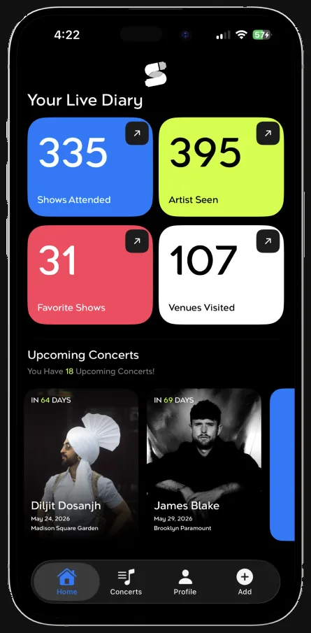
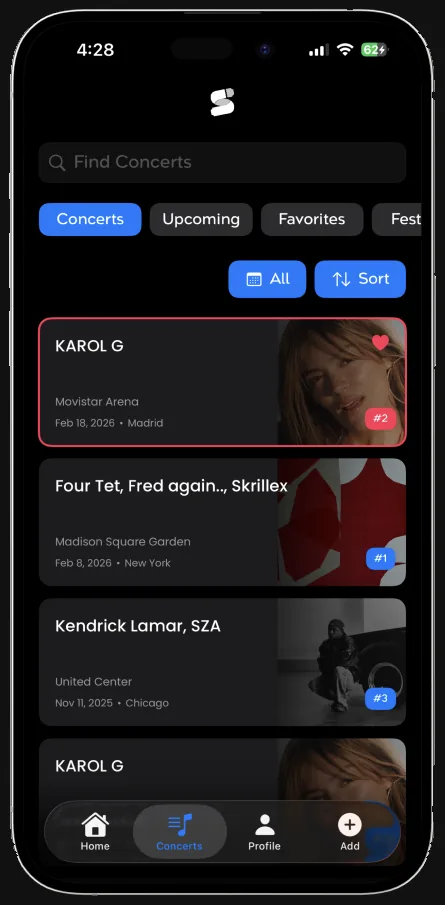
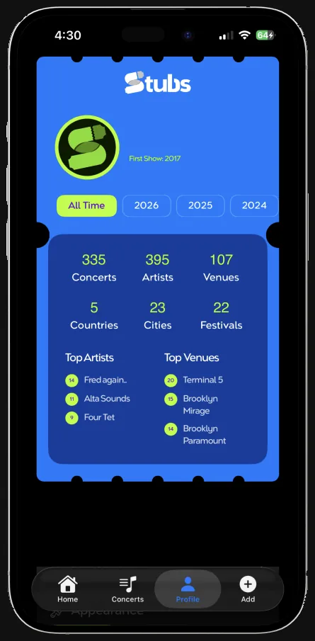

Your Live Diary
Stubs is the concert app that tracks all your shows and festivals. Point your camera at a ticket and Stubs reads the artist, venue, and date for you. Built by fellow concert-goers with too many ticket stubs in a shoebox.



What Stubs does
- Log every show Scan a paper stub or a screenshot and Stubs reads the data for you. No forms to fill out unless you want to. Export your shows with custom concert, venue, or artist tickets to share anywhere.
- The Numbers Behind the Nights Total shows, artists, venues. Your most-seen artist and your home venue. Every city you've seen a show in fills in your world map. Stats worth checking back on as the count climbs.
- Photos and videos Attach the photos and clips you actually took. Making your history looks like a collection instead of a spreadsheet.
+ many more features